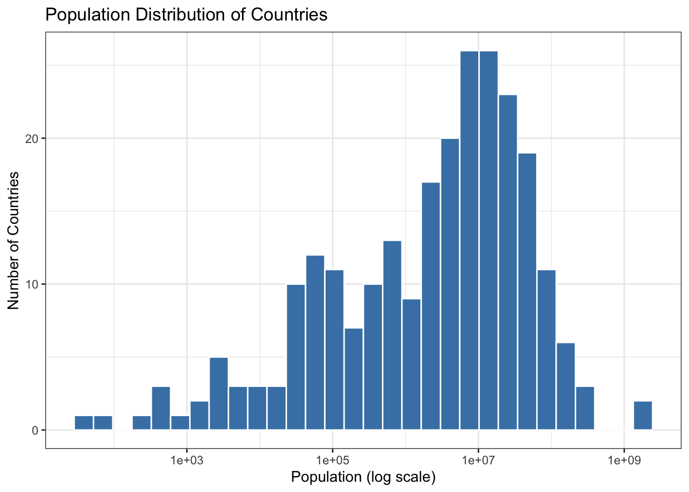

Introduction to data collection through APIs using packages like httr and jsonlite.
Basics of web scraping with rvest for gathering data from websites.
Hands-on exercises to retrieve data from a public API and scrape a website to collect and prepare a dataset for analysis.
5.0.2 Outcome
Participants will be able to collect data via APIs and web scraping to use in further analyses.
5.1 Introduction to APIs
APIs (Application Programming Interfaces) allow you to access data from web services in a structured format, typically JSON. The httr package in R is commonly used for making HTTP requests.
5.1.1 Example: Fetching Data from an API
Show the code
library(httr)library(jsonlite)# Example API requestresponse <-GET("https://api.exchangerate-api.com/v4/latest/USD")# Check the status of the requeststatus_code(response)
[1] 200
Show the code
# Parse the JSON contentdata <-content(response, as ="text")
No encoding supplied: defaulting to UTF-8.
Show the code
parsed_data <-fromJSON(data)# Display some exchange rateshead(parsed_data$rates)
Web scraping involves extracting data from websites. The rvest package is designed for this purpose, allowing you to navigate HTML content and extract useful information.
5.2.1 Example 1: Scraping a Table from Wikipedia
Show the code
library(rvest)# URL of the page to scrapeurl <-"https://en.wikipedia.org/wiki/List_of_ISO_3166_country_codes"# Read the HTML contentpage <-read_html(url)# Extract tables from the pagetables <-html_table(page, fill =TRUE)# Display the first tablehead(tables[[1]])
# A tibble: 6 × 8
`ISO 3166[1]name[5]` `Official state name[6][a]` `Sovereignty[6][7][8]`
<chr> <chr> <chr>
1 ISO 3166[1]name[5] Official state name[6][a] Sovereignty[6][7][8]
2 Afghanistan the Islamic Republic of Afghanist… UN member
3 Åland Islands Åland[c][d] Finland
4 Albania the Republic of Albania UN member
5 Algeria the People's Democratic Republic … UN member
6 American Samoa American Samoa[c] United States
# ℹ 5 more variables: `ISO 3166-1[2]` <chr>, `ISO 3166-1[2]` <chr>,
# `ISO 3166-1[2]` <chr>, `ISO 3166-2[3]subdivision codes link` <chr>,
# `TLD[9]` <chr>
5.2.2 Example 2: Scraping full Data from a Table
Show the code
# install.packages("tidyverse")library(tidyverse)
── Attaching core tidyverse packages ──────────────────────── tidyverse 2.0.0 ──
✔ dplyr 1.1.4 ✔ readr 2.1.5
✔ forcats 1.0.0 ✔ stringr 1.5.1
✔ ggplot2 3.5.1 ✔ tibble 3.2.1
✔ lubridate 1.9.3 ✔ tidyr 1.3.1
✔ purrr 1.0.2
── Conflicts ────────────────────────────────────────── tidyverse_conflicts() ──
✖ dplyr::filter() masks stats::filter()
✖ purrr::flatten() masks jsonlite::flatten()
✖ readr::guess_encoding() masks rvest::guess_encoding()
✖ dplyr::lag() masks stats::lag()
ℹ Use the conflicted package (<http://conflicted.r-lib.org/>) to force all conflicts to become errors
Show the code
# install.packages("rvest")library(rvest)url <-'https://en.wikipedia.org/wiki/List_of_countries_by_foreign-exchange_reserves'#Reading the HTML code from the Wiki websitewikiforreserve <-read_html(url)class(wikiforreserve)
[1] "xml_document" "xml_node"
Show the code
## Get the XPath data using Inspect element feature in Safari, Chrome or Firefox## At Inspect tab, look for <table class=....> tag. Leave the table close## Right click the table and Copy --> XPath, paste at html_nodes(xpath =)foreignreserve <- wikiforreserve %>%html_nodes(xpath='//*[@id="mw-content-text"]/div[1]/table[1]') %>%html_table()class(foreignreserve) # Why the first column is not scrapped?
[1] "list"
Show the code
fores = foreignreserve[[1]][,c(1,4,5,6,7,8,9) ] # [[ ]] returns a single element directly, without retaining the list structure.# names(fores) <-c("Country", "Forexreswithgold", "Date1", "Change1","Forexreswithoutgold", "Date2","Change2")colnames(fores)
## Clean up variables## What type is Date?# Convert Date1 variablefores$Date1 =as.Date(fores$Date1, format ="%d %b %Y")class(fores$Date1)
[1] "Date"
Show the code
head(fores)
# A tibble: 6 × 7
Country Forexreswithgold Date1 Change1 Forexreswithoutgold Date2 Change2
<chr> <chr> <date> <chr> <chr> <chr> <chr>
1 Countri… Millions americ… NA Change Millions american … Last… Change
2 China 3,571,803 2024-10-31 21,957 3,380,334 31 O… 415
3 Japan 1,238,950 2024-11-01 15,948 1,164,583 1 No… 18,782
4 Switzer… 952,687 2024-09-30 1,127 864,519 30 S… 604
5 India 682,130 2024-11-01 2,675 612,379 1 No… 3,899
6 Russia 628,500 2024-11-01 3,400 596,100 1 No… 720
Show the code
# write.csv(fores, "fores.csv", row.names = FALSE) # use fwrite?
5.3 Hands-On Exercise
5.3.1 Exercise 1: Using the REST Countries API
Exercise Title: Exploring Country Data with REST Countries API
Objective: Learn how to retrieve and analyze data about countries using the REST Countries API.
5.3.1.1 1. Overview of the REST Countries API
The REST Countries API provides detailed information about countries, including names, populations, area sizes, languages, currencies, and more. It is completely free to use and does not require authentication.
Use Cases: Analyze global metrics, visualize country statistics, or create a simple application that displays country information.
5.3.1.2 2. Example Code to Fetch Country Data
Here’s how you can use R to fetch data from the REST Countries API:
Show the code
# Load necessary librarieslibrary(httr)library(jsonlite)# Define the API endpointurl <-"https://restcountries.com/v3.1/all"# Make a GET request to the APIresponse <-GET(url)# Check if the request was successfulif (status_code(response) ==200) {# Parse the JSON response countries_data <-fromJSON(content(response, "text"))# Display the first few rows of the datahead(countries_data$population)} else {print("Failed to retrieve data")}
No encoding supplied: defaulting to UTF-8.
[1] 30 112519 8654622 7976985 9749763 23503349
5.3.1.3 3. Analyze the Data
Once you have retrieved the country data, you can perform various analyses. Here are a few ideas:
Visualize Population Distribution: Create a histogram or bar chart showing the population distribution of countries.
Filter by Region: Extract countries from a specific region (e.g., Europe) and analyze their statistics.
Compare Area Sizes: Find out which countries have the largest and smallest areas.
Show the code
library(ggplot2)# Example: Visualize population distributionggplot(data = countries_data, aes(x = population)) +geom_histogram(bins =30, fill ="steelblue", color ="white") +scale_x_log10() +# Log scale for better visualizationlabs(title ="Population Distribution of Countries",x ="Population (log scale)",y ="Number of Countries") +theme_bw()

5.3.2 Additional Free APIs for Practice
If you want more options for exercises, consider these additional free APIs:
Use: Get random dog images and breed information. Free access with no authentication required.
5.3.3 Exercise 2: Scrape Data from a Web Page
Choose a webpage that contains tabular data.
Use rvest to scrape the table and convert it into a data frame.
Show the code
# install.packages("tidyverse")library(tidyverse)# install.packages("rvest")library(rvest)url <-'https://en.wikipedia.org/wiki/List_of_countries_by_foreign-exchange_reserves'#Reading the HTML code from the Wiki websitewikiforreserve <-read_html(url)class(wikiforreserve)
[1] "xml_document" "xml_node"
Show the code
## Get the XPath data using Inspect element feature in Safari, Chrome or Firefox## At Inspect tab, look for <table class=....> tag. Leave the table close## Right click the table and Copy --> XPath, paste at html_nodes(xpath =)foreignreserve <- wikiforreserve %>%html_nodes(xpath='//*[@id="mw-content-text"]/div[1]/table[1]') %>%html_table()class(foreignreserve) # Why the first column is not scrapped?
[1] "list"
Show the code
fores = foreignreserve[[1]][,c(1, 2,3,4,5,6,7,8) ] # [[ ]] returns a single element directly, without retaining the list structure.# names(fores) <-c("Country", "Forexreswithgold", "Date1", "Change1","Forexreswithoutgold", "Date2","Change2", "Sources")colnames(fores)
By following these examples and exercises, participants will gain practical experience in collecting data through APIs and web scraping using R. This session will enhance their ability to gather and prepare data for analysis in real-world scenarios.
5.4 Summary
In this chapter, we introduced the concepts of data collection through APIs and web scraping. Participants learned how to fetch data from APIs using the httr and jsonlite packages and scrape websites with rvest. By working through hands-on exercises, they practiced retrieving data from a public API and scraping a webpage to prepare a dataset for further analysis. These skills are essential for data scientists and analysts who need to collect and process data from various sources for their projects.
Source Code
# Chapter 4: Data Collection with APIs and Web Scraping### Key Topics- Introduction to data collection through APIs using packages like `httr` and `jsonlite`.- Basics of web scraping with `rvest` for gathering data from websites.- Hands-on exercises to retrieve data from a public API and scrape a website to collect and prepare a dataset for analysis.### OutcomeParticipants will be able to collect data via APIs and web scraping to use in further analyses.## Introduction to APIsAPIs (Application Programming Interfaces) allow you to access data from web services in a structured format, typically JSON. The `httr` package in R is commonly used for making HTTP requests.### Example: Fetching Data from an API```{r}library(httr)library(jsonlite)# Example API requestresponse <-GET("https://api.exchangerate-api.com/v4/latest/USD")# Check the status of the requeststatus_code(response)# Parse the JSON contentdata <-content(response, as ="text")parsed_data <-fromJSON(data)# Display some exchange rateshead(parsed_data$rates)```## Introduction to Web Scraping with rvestWeb scraping involves extracting data from websites. The `rvest` package is designed for this purpose, allowing you to navigate HTML content and extract useful information.### Example 1: Scraping a Table from Wikipedia```{r}library(rvest)# URL of the page to scrapeurl <-"https://en.wikipedia.org/wiki/List_of_ISO_3166_country_codes"# Read the HTML contentpage <-read_html(url)# Extract tables from the pagetables <-html_table(page, fill =TRUE)# Display the first tablehead(tables[[1]])```### Example 2: Scraping full Data from a Table```{r}# install.packages("tidyverse")library(tidyverse)# install.packages("rvest")library(rvest)url <-'https://en.wikipedia.org/wiki/List_of_countries_by_foreign-exchange_reserves'#Reading the HTML code from the Wiki websitewikiforreserve <-read_html(url)class(wikiforreserve)## Get the XPath data using Inspect element feature in Safari, Chrome or Firefox## At Inspect tab, look for <table class=....> tag. Leave the table close## Right click the table and Copy --> XPath, paste at html_nodes(xpath =)foreignreserve <- wikiforreserve %>%html_nodes(xpath='//*[@id="mw-content-text"]/div[1]/table[1]') %>%html_table()class(foreignreserve) # Why the first column is not scrapped?fores = foreignreserve[[1]][,c(1,4,5,6,7,8,9) ] # [[ ]] returns a single element directly, without retaining the list structure.# names(fores) <-c("Country", "Forexreswithgold", "Date1", "Change1","Forexreswithoutgold", "Date2","Change2")colnames(fores)head(fores$Country, n=10)## Clean up variables## What type is Date?# Convert Date1 variablefores$Date1 =as.Date(fores$Date1, format ="%d %b %Y")class(fores$Date1)head(fores)# write.csv(fores, "fores.csv", row.names = FALSE) # use fwrite?```## Hands-On Exercise### Exercise 1: Using the REST Countries API**Exercise Title:** Exploring Country Data with REST Countries API**Objective:** Learn how to retrieve and analyze data about countries using the REST Countries API.#### 1. Overview of the REST Countries APIThe REST Countries API provides detailed information about countries, including names, populations, area sizes, languages, currencies, and more. It is completely free to use and does not require authentication.- **API URL:** [REST Countries API](https://restcountries.com/)- **Use Cases:** Analyze global metrics, visualize country statistics, or create a simple application that displays country information.#### 2. Example Code to Fetch Country DataHere’s how you can use R to fetch data from the REST Countries API:```{r}# Load necessary librarieslibrary(httr)library(jsonlite)# Define the API endpointurl <-"https://restcountries.com/v3.1/all"# Make a GET request to the APIresponse <-GET(url)# Check if the request was successfulif (status_code(response) ==200) {# Parse the JSON response countries_data <-fromJSON(content(response, "text"))# Display the first few rows of the datahead(countries_data$population)} else {print("Failed to retrieve data")}```#### 3. Analyze the DataOnce you have retrieved the country data, you can perform various analyses. Here are a few ideas:- **Visualize Population Distribution**: Create a histogram or bar chart showing the population distribution of countries.- **Filter by Region**: Extract countries from a specific region (e.g., Europe) and analyze their statistics.- **Compare Area Sizes**: Find out which countries have the largest and smallest areas.```{r warning=F}library(ggplot2)# Example: Visualize population distributionggplot(data = countries_data, aes(x = population)) + geom_histogram(bins = 30, fill = "steelblue", color = "white") + scale_x_log10() + # Log scale for better visualization labs(title = "Population Distribution of Countries", x = "Population (log scale)", y = "Number of Countries") + theme_bw()```### Additional Free APIs for PracticeIf you want more options for exercises, consider these additional free APIs:1. **JSONPlaceholder**: - **URL**: [JSONPlaceholder](https://jsonplaceholder.typicode.com/) - **Use**: A fake online REST API for testing and prototyping. You can simulate CRUD operations with posts, comments, and user data.2. **PokeAPI**: - **URL**: [PokeAPI](https://pokeapi.co/) - **Use**: Access Pokémon data for projects on data relationships and stats visualization. Rate-limited to 100 requests per minute.3. **Open Library Books API**: - **URL**: [Open Library API](https://openlibrary.org/developers/api) - **Use**: Access data about millions of books, including titles, authors, and publication dates. Unlimited access without authentication.4. **Dog CEO's Dog API**: - **URL**: [Dog API](https://thedogapi.com/) - **Use**: Get random dog images and breed information. Free access with no authentication required.### Exercise 2: Scrape Data from a Web Page1. Choose a webpage that contains tabular data.2. Use `rvest` to scrape the table and convert it into a data frame.```{r }# install.packages("tidyverse")library(tidyverse)# install.packages("rvest")library(rvest)url <- 'https://en.wikipedia.org/wiki/List_of_countries_by_foreign-exchange_reserves'#Reading the HTML code from the Wiki websitewikiforreserve <- read_html(url)class(wikiforreserve)## Get the XPath data using Inspect element feature in Safari, Chrome or Firefox## At Inspect tab, look for <table class=....> tag. Leave the table close## Right click the table and Copy --> XPath, paste at html_nodes(xpath =)foreignreserve <- wikiforreserve %>% html_nodes(xpath='//*[@id="mw-content-text"]/div[1]/table[1]') %>% html_table()class(foreignreserve) # Why the first column is not scrapped?fores = foreignreserve[[1]][,c(1, 2,3,4,5,6,7,8) ] # [[ ]] returns a single element directly, without retaining the list structure.# names(fores) <- c("Country", "Forexreswithgold", "Date1", "Change1","Forexreswithoutgold", "Date2","Change2", "Sources")colnames(fores)```By following these examples and exercises, participants will gain practical experience in collecting data through APIs and web scraping using R. This session will enhance their ability to gather and prepare data for analysis in real-world scenarios.## SummaryIn this chapter, we introduced the concepts of data collection through APIs and web scraping. Participants learned how to fetch data from APIs using the `httr` and `jsonlite` packages and scrape websites with `rvest`. By working through hands-on exercises, they practiced retrieving data from a public API and scraping a webpage to prepare a dataset for further analysis. These skills are essential for data scientists and analysts who need to collect and process data from various sources for their projects.